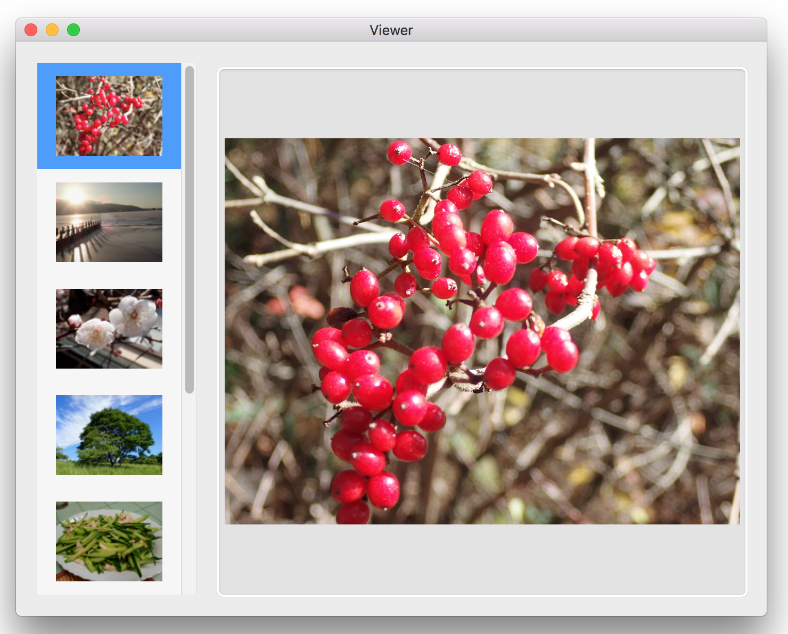
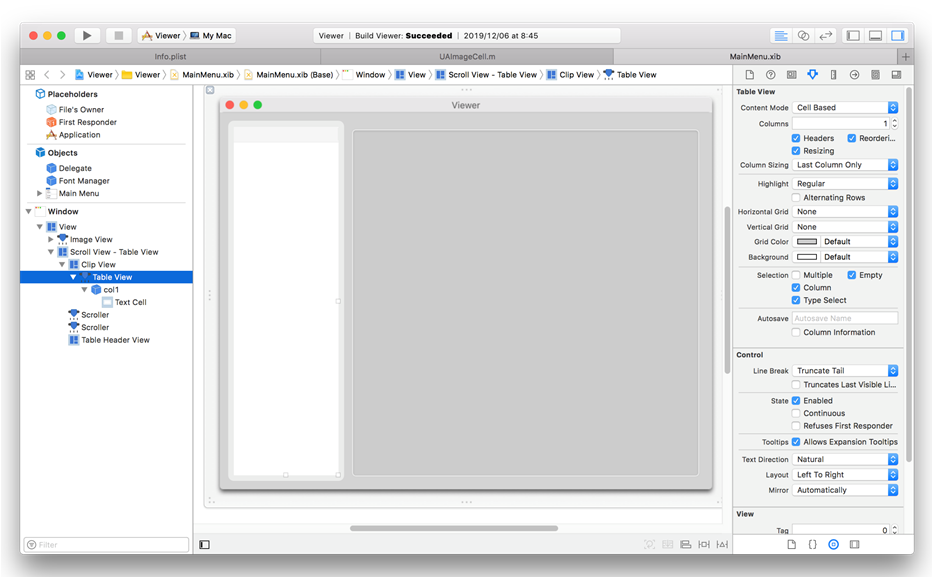

Cell Based テーブルビュー・イメージを表示する
動画はこちら
仕様
ファイルからイメージオブジェクト読み込み、１列のテーブルビューの各行に縮小したサムネール画像を展開する。クリックまたはカーソルの移動によりサムネール画像を選択したとき、イメージビューに画像を表示する。
NSTableViewDataSourceプロトコルの tableView:objectValueForTableColumn:row:メソッドは文字列しか返せないので、ここでは nil を返す。その代わりNSTableViewDelegateの tableView:dataCellForTableColumn:row:メソッドを実装する。
このメソッドはビューが再表示されるたびに呼ばれ、表示直前のTextFieldCellオブジェクトを取得することができる。セルにイメージを表示するには、このオブジェクトのプロパティにイメージを埋め込み、セルを描画すdrawWithFrame:inView:メソッドをオーバーライドすれば良い。
実装
インタフェースビルダでビューをデザインする

テーブルビューの属性の設定をプログラムにより行う。
イメージファイルの一覧を取得する
指定したディレクトリの下にあるイメージファイルの一覧を求める処理
ファイルがイメージファイル（JPEG, PNG etc..）であるかどうかは、ファイルの拡張子で示されるファイルタイプ（UTI）から判定する。
イメージファイルを読み込み縮小する
イメージファイルからNSImageオブジェクトを読み込み、サムネイルの画像サイズ（100x100）に縮小する。縦横比は維持するので長方形の場合は上下または左右に余白が生じる。
NSTableView DataSourceプロトコルの実装
tableView:objectValueForTableColumn:row:メソッドの戻り値は空白（nil）を返す。セルの表示は後述のデリゲートメソッドで行う。
NSTableView Delegateプロトコルの実装
tableView:dataCellForTableColumn:row:メソッドは、セルに表示するNSCellオブジェクトを返す。
カスタムクラスのUAImageCell（NSCellのサブクラス）は、引数にとったNSImageオブジェクトをイニシャライザの中でセルに描画（drawInRect）する。
サムネール画像（テーブルビューの行）を選択したとき、イメージビューに画像を表示する。